1.ちょっとした雑談
恥ずかしながら、DrySisterの前回の記事からもう1年以上が経ちました。その間に多くの仲間から「よく書けているね、いつ更新するの？」と直接メッセージをもらいましたが、私はだいたい「打ち切りだよ」と返していました。理由はいろいろありますが、最近は時間があるので、第一版を完結させようと思っています。AS 2.1.2、今ではもうAS 3.0.1になりました。本節の内容は
- Step 1：これまでのいくつかの節で扱った内容を復習する
- Step 2：AS 3.0.1でコードを動かすにはいくつか調整が必要
- Step 3：ログクラスを作成する
次節では署名、難読化、アプリストアへのリリースについて説明します。余計な話はやめて、本節の内容を始めましょう！
2.コードレビュー
- 第1節：プロジェクト構築と簡単な実装
- 1. Git関連の操作
- 2. シンプルな画像ロードクラス（ネットワークストリームを取得→画像に変換→HandlerでUIを更新）
- 第2節：バックエンドデータの解析
- 1. Android標準の雑なJsonパーサーを使用してバックエンドが返すJsonデータを解析する（Json文字列 -> List<Bean>)
- 2. AsyncTaskを使用して非同期ネットワークリクエストを行う
- 第3節：画像ロードの最適化（画像キャッシュの小さなフレームワークを作成）
- 1. 画像キャッシュの基本的なパターン
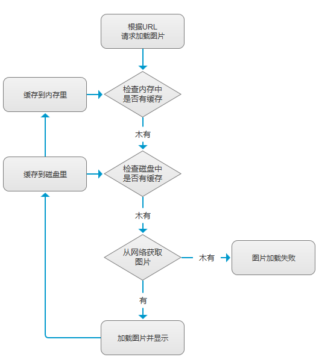
- 2. 使用するサンプリング圧縮法でBitmapを圧縮してOOMを回避する
- 3. スレッドプールで複数の画像ロードスレッドを管理する
- 4. HandlerでUIを更新する
- 5. String文字列（ここではURL）をMD5に変換
- 6. メモリキャッシュクラスLruCacheの使用
- 7. ディスクキャッシュクラスDiskLruCacheの使用
- 8. 画像の非同期ロードとキャッシュ全体のロジック設計
- 1. 画像キャッシュの基本的なパターン
- 第4節：データキャッシュの追加（SQLiteを導入）
- 1. ネットワーク状態の判定
- 2. カスタムSQLiteOpenHelperでデータベースを作成
- 3. データベース関連操作：追加・削除・更新・検索、トランザクション、ページングなど
以上が前の4つの節の内容です。Android基礎入門で重要な知識ポイントをすべて活用しました。すべて習得できれば、なんとかAndroid入門と言えるでしょう。この先の道はまだ長いです！
3.コードの調整
ASが3.0に切り替わってから、以下のファイルのコードを変更する必要があります。いつものように、ブランチ切り替えコマンドを実行します：git checkout -b fixcodeas3.0.1、それからコード修正を始めます：
プロジェクトレベルのbuild.gradle：

APPレベルのbuild.gradle：

gradle-wrapper.properties：

もう一つ少し変更する場所があります：SisterApi.java、「福利」に変更します：%e7%a6%8f%e5%88%a9これは中国語のエンコード処理の問題に関係します。HttpUrlConnectionは中国語を含むURLを開くことができないため、中国語の部分に対してURLEncoder.encode(中文部分,"utf-8");を呼び出してエンコードします。忘れずにただ 中国語の部分だけで、URL全体ではありません！！！エンコードには例外のキャッチも必要です。ここではエンコードが必要な場所が1つだけなので、Web版のエンコードツールを使って直接エンコードしました：https://c.runoob.com/front-end/695
変換後の結果：
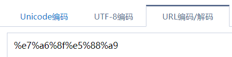
他にもいくつか小さな変更があります。buildToolsVersion 26以上，findViewByIdは強制キャストする必要はありません、そのメソッドの中を見ればわかりますが、ジェネリクスが使われているので、findViewByIdをすべて取り除きます：


最後に、私の魅蓝E2で実行したときの表示が少しずれていると感じたので、ページレイアウトを少し調整し、画像の幅を画面いっぱいにして、高さは自動調整にしました。ここで使う属性はandroid:adjustViewBounds = "true"、つまり縦横比に応じて拡大縮小します。さらに、「前へ」「次へ」のテキストをstrings.xmlファイルに入れて、余白を少し調整しました：

最後にプロジェクトの実行結果を見てみましょう。（おっと、きれいな女の子は目にいいですね）：

それからこのブランチをdevelopブランチにマージします。ここでは以前のmergeのようなマージ方法は使わず、rebaseを使ってマージします。具体的な手順は次のとおりです：
git add . git commit -m "fix code in as3.0" git checkout develop # 切换到develop分支 git rebase fix_code_as3.0.1 # 合并分支 git push origin develop # 推送develop到远程分支 git branch -d fix_code_as3.0.1 # 删除合并后的本地分支
Gitについてまだ理解していない人は別の記事で学んでください。ここでは詳しく説明しません：小猪のGit使用まとめ
4.ログツールクラスとクラッシュログ収集クラスの作成
Logでログを出力することは、すべての開発者にとって馴染み深いでしょう。普段のデバッグには欠かせません。アプリをパッケージングしてテスターに渡してテストするとき、テスターがアプリのクラッシュを報告したら、最初に思いつくのは相手にログを提供してもらうことです。このLog出力について、多くの人は気軽にLog.e(xxx,xxx)と書くのが好きで、どんなログでもErrorレベルにしてしまいます。その理由は基本的に：赤色のほうが目立つから、はは！そして変数の値を直接出力したり、メソッド内に追加してメソッドが実行されたかどうかを検証したりします。正式リリース時に削除するのを覚えていればまだいいですが、削除し忘れるとまさに自殺行為です。とにかく以前、前の会社の上司にひどく叱られたことがあり、今でもはっきり覚えています！Logの管理は非常に重要です。私たちが作成する2つのツールクラスは次のとおりです：
- 1. debugのときはログを通常に出力し、releaseのときは出力しない
- 2.クラッシュログ収集、自分でテストしたり、テスターがテストするくらいなら問題ありません。クラッシュしたらスマホをパソコンに接続してlogcatを見れば一目瞭然です。しかし、アプリがユーザーのスマホにインストールされている場合、アプリがクラッシュして停止しても、ユーザーはログを送ってくれません。何度もクラッシュすると、ユーザーがアプリをアンインストールする可能性もあります。そのため、アプリがクラッシュしたときにログを保存し、ユーザーがWiFiに接続したときやアプリを再度開いたときに、このログを私たちのサーバーにアップロードする必要があります。ここではただ遊びで書いているだけなので、次のものだけを実装します：ローカルクラッシュログ収集、通常は友盟（Umeng）やBuglyなどの第三者統計ツールを統合してログ収集を行います。
では、要件は上記の2点です。続いてコードを書き始める準備をします。ただし、コードを書く前にLogに関する2点を説明します。おそらく多くの人はすでに知っていると思いますので、知っている人は読み飛ばして構いません：
1) Logを素早く出力する
設定を開いて、順にクリック：Live Templates -> AndroidLogログ出力に関する項目にすべてチェックを入れます。さらに、下のTemplate textに自分でテンプレートを書くこともできます。
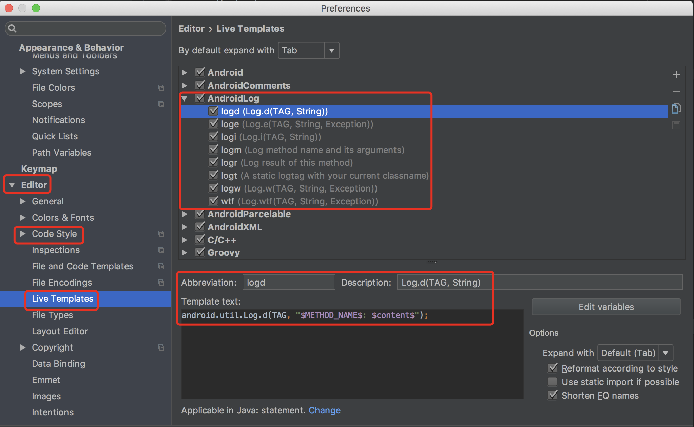
次に、コード内で上記のlog...と入力してEnterを押すだけで、Log文が生成されます。TAGは現在のメソッド名になります。

2. Logの使用に関する基礎知識
1) Logを素早く出力するコマンド
Settingsを開いて、順にクリック：Live Templates -> AndroidLogログ出力に関する項目にすべてチェックを入れます。下のTemplate textに自分でテンプレートを書くこともできます。
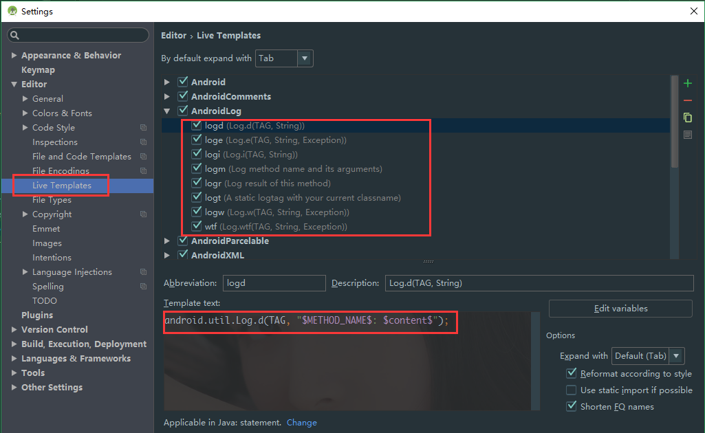
次に、コード内で上記のlog...と入力してEnterを押すだけで、Log文が生成されます。


メソッドの外で、logtと入力すると、対応するクラス名のTAGを直接生成できます：
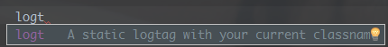
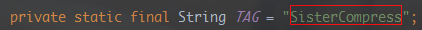
2) Logレベルの基礎知識
以前、チームリーダーがミーティングで、デバッグ時に直接Log.eを使う悪い習慣について話していました。異なるLogレベルでは異なる情報を出力すべきです：
- Log.v：Verbose（冗長）開発・デバッグ中の詳細情報です。製品にコンパイルすべきではなく、開発段階でのみ使用します。
- Log.d：Debug（デバッグ）デバッグ用の情報で、製品にはコンパイルされるが、実行時にはオフになります。
以下の3つのレベルを通常のデバッグ情報として使用することは禁止されています。これらのレベルのLogは、アプリに問題が発生したときの重要な分析手がかりです。もしむやみに使用すると、開発者がバグを分析する際に不必要な混乱を招きます。
- Log.i：Info（情報）例えば、実行時のステータス情報などです。これらのステータス情報は、問題が発生したときに役立ちます。
- Log.w：Warning（警告）アプリに異常が発生したことを警告しますが、すぐにエラーになるとは限らないため、注意が必要です。
- Log.e：Error（エラー）アプリにエラーが発生した場合で、最も注意して解決すべきものです！
3) ログツールクラスの作成
いつものように、まずブランチを切ります：buglogcatchこれはとても簡単です。デバッグ時は出力し、正式版では出力しません。BuildConfig.Debugこれを利用して判定すればよいだけです。コードは次のとおりです：

4) クラッシュログ収集クラスの作成
クラッシュログ収集クラスはApplication与Thread.UncaughtExceptionHandlerの実装に依存します。プログラムが原因で終了して抜けようとするとき、Thread.UncaughtExceptionHandlerを使用してスレッドのUncaughtExceptionHandlerを取得し、呼び出します。uncaughtExceptionメソッドを呼び出し、スレッドと例外をパラメータとして渡します。スレッドがUncaughtExceptionHandlerを明示的に設定していない場合は、それをThreadGroupそのスレッドのUncaughtExceptionHandlerとして、デフォルトの未捕捉例外ハンドラに処理を委ねます。ですから、私たちはただUncaughtExceptionHandlerインターフェースを実装し、オーバーライドしてuncaughtExceptionメソッドを実装することで、独自の処理を実現できます。まずロジックのリストを整理しましょう。
- 1.ログファイル専用のフォルダを作成する：ストレージカードが利用可能かどうかを判断し、フォルダが存在するかどうかを確認して、存在しなければ新しいフォルダを作成します。
- 2. 文字列をファイルに書き込むメソッドが必要です
- 3.クラッシュログの内容構成：現在の時刻、アプリのバージョン、デバイス情報、クラッシュログ
- 4. システムデフォルトのUncaughtExceptionHandlerを取得し、nullかどうかを判断します。nullでなければ、カスタムのUncaughtExceptionHandlerとして設定します。ここではシングルトンを使用します。
- 5. 最後にアプリの再起動です。1秒後にアプリを再起動するように設定します。
おおまかなロジックは上記のとおりです。一つずつ説明していきます。まずは1、2の手順です。

次にクラッシュログです。いくつかの部分から構成されています。まずは現在の時刻

次にアプリのバージョンとデバイス情報です。ここではHashMapを使って保存します。

さらに例外情報です。これは簡単で、例外オブジェクトをそのまま渡してprintStackTraceを呼び出すだけです。最後にすべてをまとめると次のようになります。
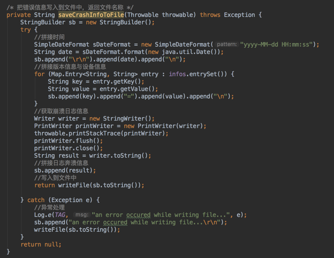
ファイルへの書き込みも解決しました。次に、カスタムUncaughtExceptionHandlerのシングルトンと、デフォルトのUncaughtExceptionHandlerハンドラの取得です。カスタムUncaughtExceptionHandlerとして設定し、さらにUncaughtExceptionメソッドをオーバーライドする必要があります。

次に、例外処理の一連の流れをひとつのメソッドにまとめます。例外が発生したら、Toastを表示してユーザーにアプリが再起動されることを知らせ、ログを書き込むメソッドも呼び出します。
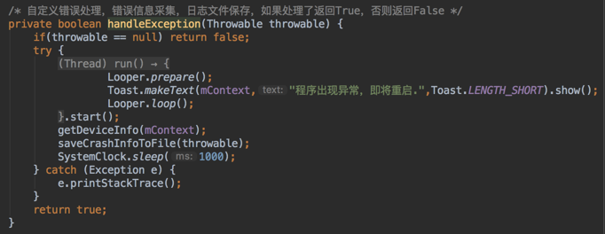
そして、オーバーライドしたUncaughtExceptionメソッドで、カスタム処理によって例外が処理されたかどうか、およびデフォルトのUncaughtExceptionHandlerがnullかどうかを判断します。すなわち：例外は処理されたか？処理されていなければ、カスタムのUncaughtExceptionHandlerに委ねます。処理されていれば、アプリを再起動します。
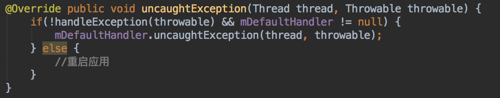
最後にアプリ再起動の関連コードを追加すれば、完成です：

これで私たちのクラッシュログ収集ツールクラスが完成しました。これを有効にするには、DrySisterApp.javaのonCreate()メソッドに次のコードを追加する必要があります：
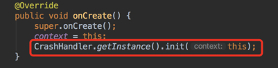
完了後に動作するかテストしたい場合は簡単です。手動でクラッシュを発生させればいいのです。たとえば、「次へ」ボタンの中で0で割る操作を行います：

アプリを実行して「次へ」をクリックすると、すぐにクラッシュします。内蔵ストレージのルートディレクトリを開いてCrashフォルダがあるか確認し、開いてログファイルがあれば成功です：
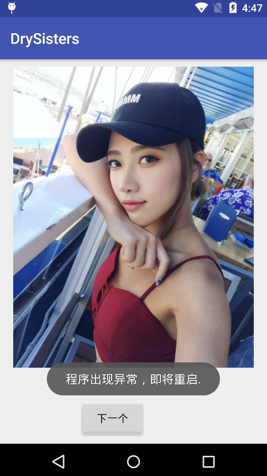
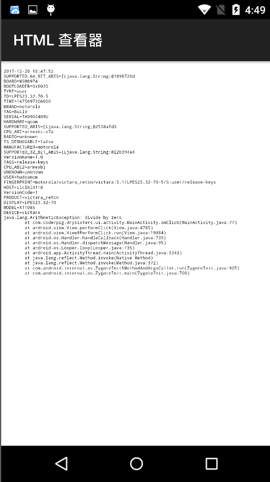
これで完了です。ブランチをdevelopにマージし、リモートリポジトリにプッシュします：
git add . git commit -m "add LogUtils and CrashHandler" git checkout develop # 切换到develop分支 git rebase bug_log_catch # 合并分支 git push origin develop # 推送develop到远程分支 git branch -d bug_log_catch # 删除合并后的本地分支
5.まとめ
この節では、まずこれまでに書いたコードを振り返りました。AS 3.0に切り替えたためコードを少し調整し、最後にログツールクラスとクラッシュログ収集ツールクラスも作成しました。雀は小さいながらも五臓六腑がすべて揃っています。小さな画像表示プログラムではありますが、入門知識の大部分を網羅しています。次の節はいよいよ初版の完結編です。署名とパッケージング，難読化、そして酷安（Coolapk）マーケットへ公開です！ご期待ください~
コードダウンロード：
https://github.com/coder-pig/DrySister/tree/developfollowやstarを歓迎します。追加したいものがあれば、issuesを上げてください！